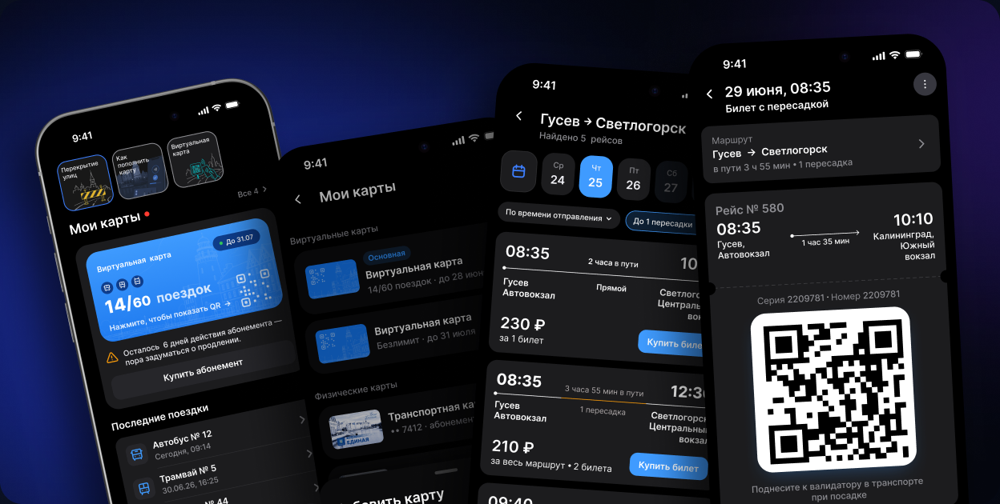
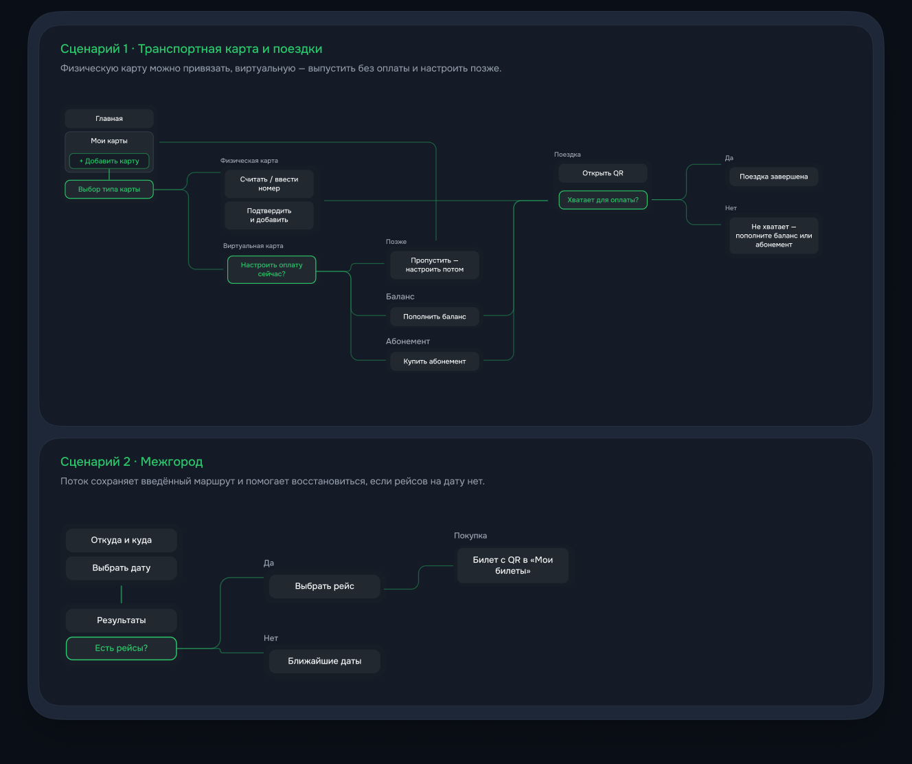
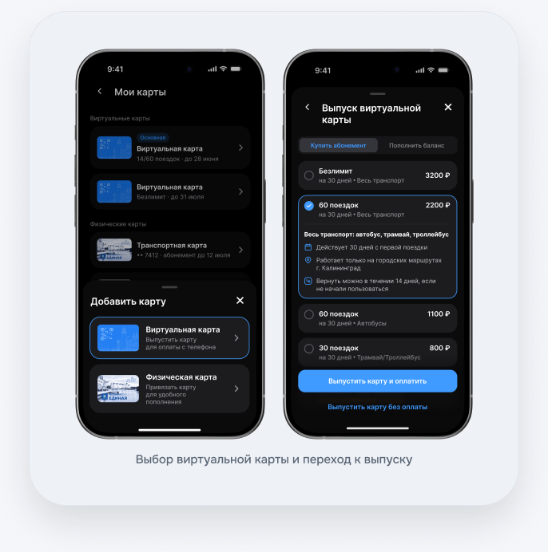
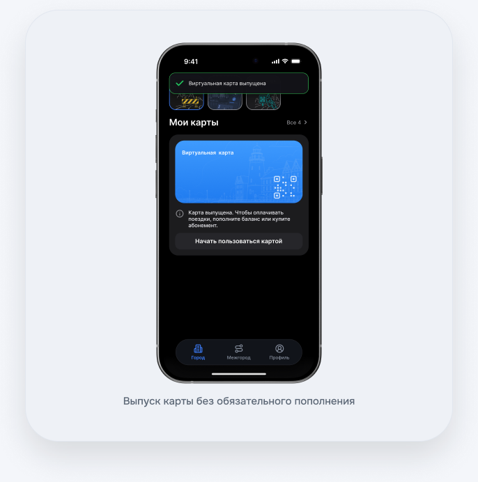
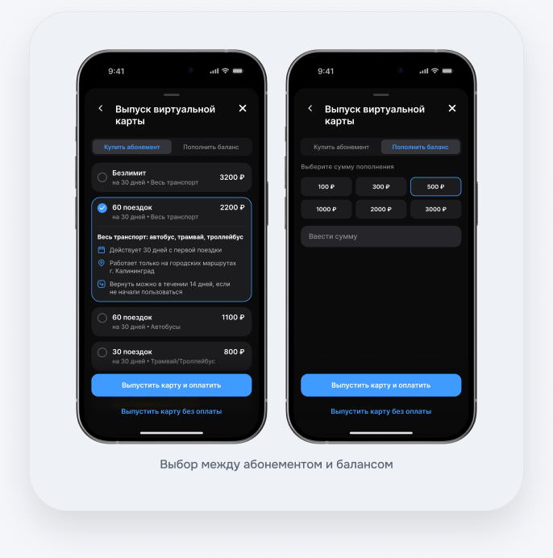
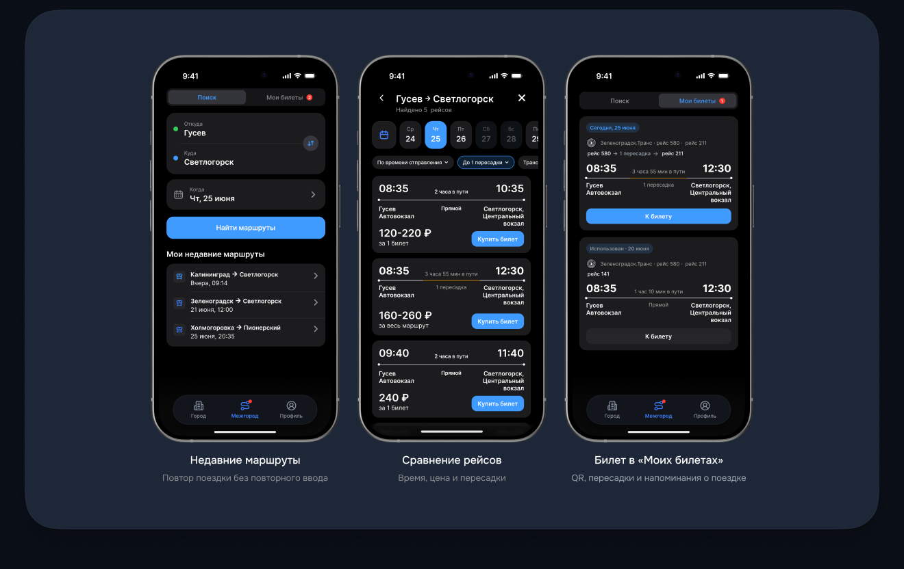
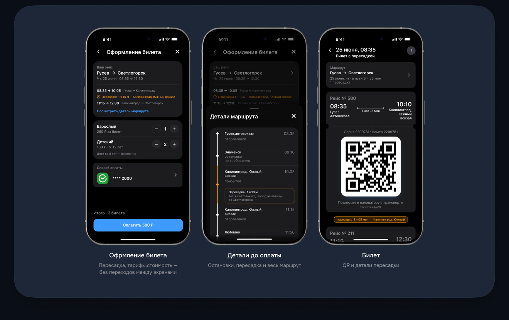
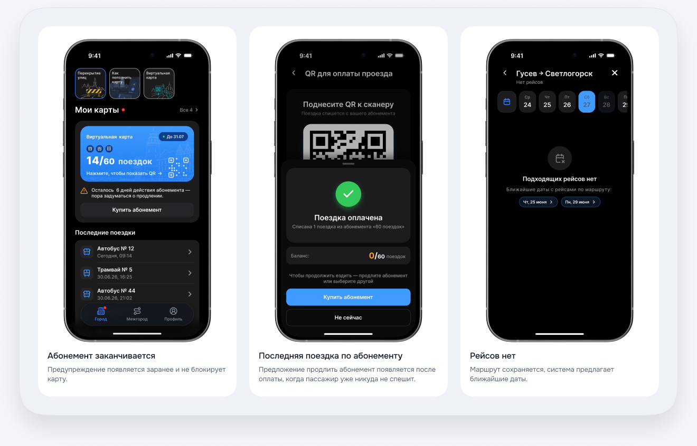

Обычные поездки — через бота
Отдельного приложения нет: онлайн-оплата поездок доступна только через Telegram-бот.
Спроектировала единый сервис для транспортной карты, оплаты городских поездок и покупки билетов на межгород.

01 · Проблема
Я живу в Калининградской области и сама сталкиваюсь с этим сценарием. Для онлайн-оплаты обычных поездок есть только Telegram-бот, карта оформляется и пополняется офлайн, а межгород остаётся отдельным сценарием. Эти наблюдения стали отправной точкой гипотез.
Отдельного приложения нет: онлайн-оплата поездок доступна только через Telegram-бот.
Карту нужно оформлять лично и пополнять только офлайн — это требует отдельной поездки.
Поиск рейса и покупка билета не связаны с оплатой обычных поездок.
02 · Основной User Flow
Два сквозных сценария включают основные действия, продуктовые развилки и крайние случаи: выпуск без оплаты, переименование карты, историю поездок, последнюю поездку по абонементу и восстановление после отсутствия рейсов.

03 · Виртуальная карта
Карта выпускается прямо в приложении: не нужно идти за пластиком или сразу пополнять счёт. Если карта уже есть, её можно привязать по номеру и быстро пополнять онлайн.
Гипотеза
Если виртуальную транспортную карту можно выпустить в приложении, пассажир сможет начать пользоваться сервисом без поездки в кассу и получения пластика.
Пассажиру
Быстрый старт без визита в кассу.
Продукту
Меньше барьеров на старте сценария.
Решение: виртуальная карта выпускается в приложении.

Гипотеза
Если отделить выпуск карты от первого пополнения, пассажир сможет подготовить карту заранее и вернуться к оплате, когда появится поездка. Это может снизить барьер входа в сервис.
Пассажиру
Карта готова заранее, деньги можно внести перед поездкой.
Продукту
Меньше отказов на этапе выпуска карты.
Решение: карта выпускается сразу, пополнение становится отдельным шагом.

Гипотеза
Если предложить баланс для разовых поездок и абонемент для регулярных, пассажир сможет выбрать подходящую модель оплаты.
Пассажиру
Оплата соответствует частоте поездок.
Продукту
Поддержка разных сценариев использования.
Решение: выбор между балансом и абонементом.

04 · Межгород
Путь строится от направления и даты к реальным вариантам рейсов. До оплаты пассажир видит время, пересадки и точку отправления, а недавний маршрут помогает повторить поездку.
Продуктовая гипотеза
Если объединить билеты на все участки межгородского маршрута с пересадкой в один заказ, пассажиру будет проще управлять поездкой и быстро находить нужный билет на каждом этапе.
Пассажиру
Весь маршрут, время пересадки и QR-коды доступны в одном месте.
Продукту
Меньше риска путаницы и обращений в поддержку.
Один заказ объединяет поездку, но для каждого рейса может сохраняться отдельный билет и QR-код.

Продуктовая гипотеза
Если до оплаты показать время, стоимость, пересадки, точку отправления и весь маршрут, пассажиру будет проще сравнить рейсы и выбрать подходящий вариант без возвратов к поиску.
Пассажиру
Условия поездки понятны до покупки билета.
Продукту
Меньше отказов из-за неожиданных пересадок или непонятных деталей.
Решение: основные параметры показаны в списке рейсов, а полный маршрут доступен до оплаты.

05 · Крайние случаи
Для каждого риска показываю не только сообщение, но и понятный путь восстановления: пополнить баланс, продлить абонемент, перейти к номеру карты или выбрать другую дату.

Основа кейса — мой опыт работы над реальным транспортным продуктом под NDA. Оригинальный проект, его интерфейсы и детали я не могу публиковать, поэтому для портфолио создала самостоятельную концепцию. Я полностью переработала UI, пересобрала ключевые сценарии и адаптировала продуктовую логику к реалиям Калининградской области.
01
Опыт работы с транспортной предметной областью и понимание реальных продуктовых ограничений.
02
Пользовательские потоки, логика виртуальной карты, баланс, абонементы, межгород и обработка ошибок.
03
UI, визуальная система, структура приложения, тексты, экраны и вымышленные данные.
Кейс не воспроизводит закрытый продукт и не раскрывает данные заказчика